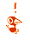

AVIARY
I like birds.
I've liked birds since I was a little kid (some of my earliest memories are of drawing pictures of robins and magpies) but I only started formally birdwatching around Spring 2021, thanks to my dad.
Though I haven't been at it for very long, it has quickly become one of my favourite hobbies. It's a great excuse to get outdoors, an excellent way to meet new people, and a practically neverending source of humour, beauty and wonder.
It's also totally easy to get into:
all you need is access to a city-park, and a guidebook or free phone app.
(A monocular helps, too. I also use Scythebill for recordkeeping.)
Here, you can find a log of all my birdwatching trips, and my life-list.
I plan to update this section of the site with new species and journal-entries every time I head out birdwatching. That's usually weekly in the summer and spring.
So check back here often. Make Badgersaurus a part of your daily internet-routine. Artificially boost my page-view numbers. Please.

Life-List
A loosely-organized list of every species of bird I have ever seen,
from pigeons to pelicans.

Birdwatching Journal
Trip reports, photographs, and thoughts on the nature of life.
Updated every time I head out!